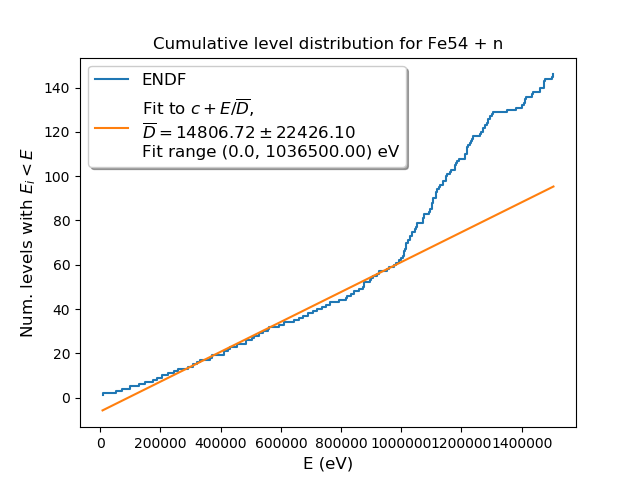
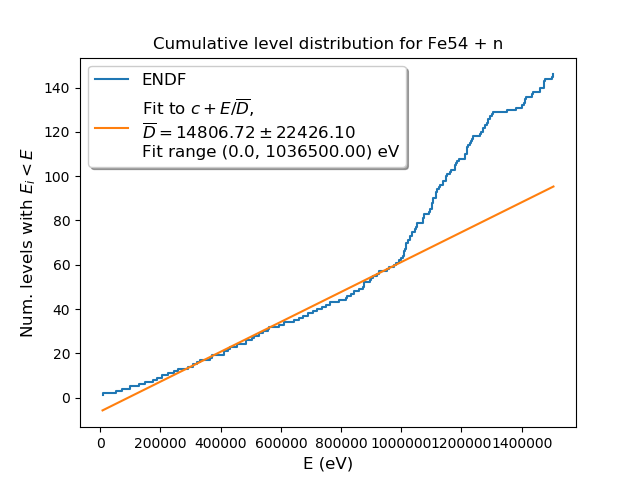
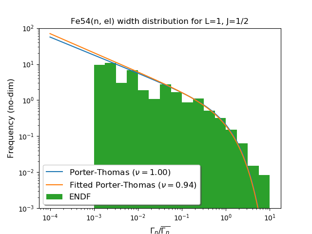
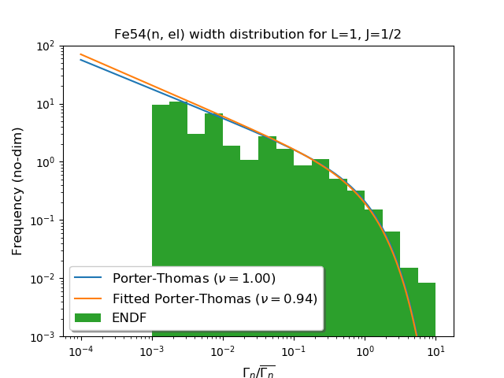

| No. resonances | No. resonances w/ ER<0 | gfact | Threshold E (eV) | Eliminated? | Competative? | Relativistic? | Pot. scatt. only? | RRR <D> (eV) | RRR <Gamma> (eV) |
|---|
| photon + Fe55 (j=0.5,l=0,s=0.0) | 324 | 2 | 1.0 | -9472308.63327 | True | False | False | False | 5.5e3 +/- 5.6e3 eV | 0.53 +/- 0.39 eV |
| n + Fe54 (j=0.5,l=0,s=0.5) | 148 | 2 | 1.0 | -0.0 | False | False | False | False | 1.4e4 +/- 1.0e4 eV | 6.e3 +/- 1.1e4 eV |
| n + Fe54 (j=0.5,l=1,s=0.5) | 176 | 0 | 1.0 | -0.0 | False | False | False | False | 8.5e3 +/- 7.0e3 eV | 1.0e3 +/- 3.3e3 eV |
| photon + Fe55 (j=1.5,l=0,s=0.0) | 370 | 0 | 1.0 | -9472308.63327 | True | False | False | False | 4.3e3 +/- 3.7e3 eV | 0.47 +/- 0.14 eV |
| n + Fe54 (j=1.5,l=1,s=0.5) | 196 | 0 | 2.0 | -0.0 | False | False | False | False | 7.6e3 +/- 5.7e3 eV | 188. +/- 4.9e2 eV |
| n + Fe54 (j=1.5,l=2,s=0.5) | 174 | 0 | 2.0 | -0.0 | False | False | False | False | 1.e4 +/- 1.1e4 eV | 177. +/- 4.5e2 eV |
| photon + Fe55 (j=2.5,l=0,s=0.0) | 43 | 0 | 1.0 | -9472308.63327 | True | False | False | False | 2.1e4 +/- 5.6e4 eV | 0.46 +/- 0.17 eV |
| n + Fe54 (j=2.5,l=2,s=0.5) | 43 | 0 | 3.0 | -0.0 | False | False | False | False | 2.1e4 +/- 5.6e4 eV | 140. +/- 3.2e2 eV |
 

 
